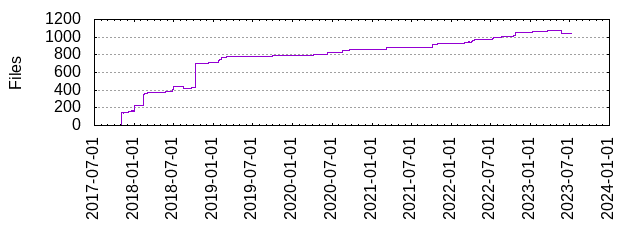

Files
- Total files
- 1042
- Total lines
- 290229
- Average file size
- 9730.08 bytes

| Extension | Files (%) | Lines (%) | Lines/file |
|---|
| 39 (3.74%) | 1010 (0.35%) | 25 |
| S | 3 (0.29%) | 7 (0.00%) | 2 |
| bash | 3 (0.29%) | 130 (0.04%) | 43 |
| bazel | 49 (4.70%) | 2052 (0.71%) | 41 |
| bzl | 30 (2.88%) | 3865 (1.33%) | 128 |
| bzlmod | 1 (0.10%) | 0 (0.00%) | 0 |
| c | 7 (0.67%) | 129 (0.04%) | 18 |
| csv | 1 (0.10%) | 15 (0.01%) | 15 |
| go | 576 (55.28%) | 263716 (90.86%) | 457 |
| h | 3 (0.29%) | 33 (0.01%) | 11 |
| in | 116 (11.13%) | 3211 (1.11%) | 27 |
| json | 2 (0.19%) | 20 (0.01%) | 10 |
| md | 15 (1.44%) | 1848 (0.64%) | 123 |
| mod | 2 (0.19%) | 42 (0.01%) | 21 |
| old | 29 (2.78%) | 58 (0.02%) | 2 |
| out | 5 (0.48%) | 26 (0.01%) | 5 |
| patch | 2 (0.19%) | 35 (0.01%) | 17 |
| proto | 42 (4.03%) | 178 (0.06%) | 4 |
| rst | 5 (0.48%) | 1837 (0.63%) | 367 |
| s | 31 (2.98%) | 7814 (2.69%) | 252 |
| sh | 2 (0.19%) | 1030 (0.35%) | 515 |
| sum | 2 (0.19%) | 139 (0.05%) | 69 |
| txt | 27 (2.59%) | 281 (0.10%) | 10 |
| want | 44 (4.22%) | 1117 (0.38%) | 25 |
| y | 1 (0.10%) | 1306 (0.45%) | 1306 |
| yml | 4 (0.38%) | 109 (0.04%) | 27 |
| zsh | 1 (0.10%) | 208 (0.07%) | 208 |